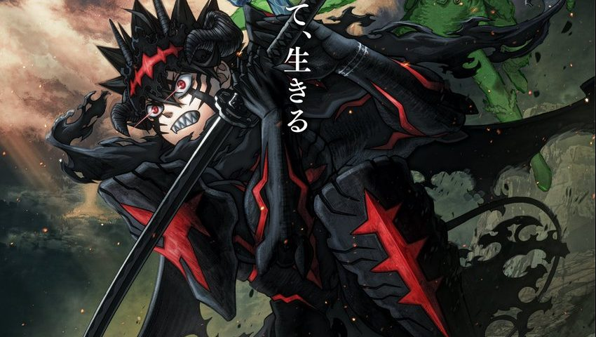

Black Clover Season 2: Release Date & Where to Watch
Black Clover Season 2 arrives as one of October’s major anime releases. Streaming availability may vary by region.
Black Clover Season 2 premiered on October 3, 2026. The official Japanese site lists the new television season for Saturdays at 11:00 p.m. JST on the TV Tokyo network and other stations.
Black Clover Season 2 release date and time
The new season began Saturday, October 3 at 23:00 JST in Japan. This return brings the television anime back with a new run following the earlier Black Clover series and the franchise's subsequent movie.
Where to watch
Crunchyroll is carrying the season in supported international regions. Streaming availability, subtitles, dubs and episode-release times can vary by country, so the exact listing should be checked in the viewer's regional catalog.
What to expect from the new season
Asta and the Magic Knights return as the story moves deeper into the conflicts surrounding the Clover and Spade kingdoms. The official Season 2 campaign includes a new promotional video and updated character material, positioning the return as a major continuation rather than a recap project.
Is Black Clover Season 2 weekly?
The Japanese television slot is scheduled weekly on Saturdays. AniNextUp will continue tracking the international streaming schedule and any official changes to broadcast timing.
Black Clover Season 2 FAQ
Is this a reboot?
No. The new season continues the existing Black Clover anime story rather than starting over.
Where can I watch it?
Crunchyroll carries the season in supported international territories. Availability, subtitles, dubs and release times can vary by country.